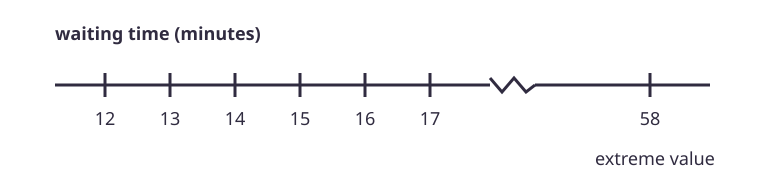
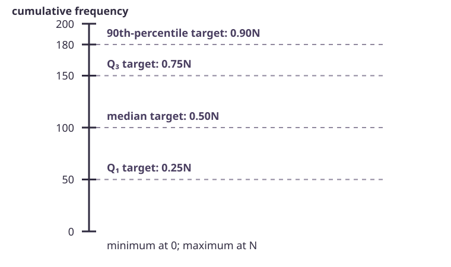

A fair comparison needs one statement about a typical value and one about variation. Name the statistic, give its direction, and connect it to the real context.
A measure of centre describes a typical or average value.
Common measures are the mean, median and mode.
Spread
A measure of spread describes variation or consistency.
Common measures are the range, interquartile range and standard deviation.
Variance measures spread about the mean. Squaring a value means multiplying it by itself. The mean of squares is the average of all the squared values. Standard deviation is the square root of variance, so it describes spread about the mean in the original units.
Interquartile range
Variance mean of squares minus
Standard deviation square root of variance
is the lower quartile and is the upper quartile.
A higher centre describes position.
A larger spread describes more variation and less consistency.
Always attach the statistic to its real context and units.
Compare like with like
Worked example 1
Journey times
Group
Median journey time (min)
IQR (min)
A
42
18
B
50
10
Compare medians: .
Group B generally has longer journey times because its median is higher.
Compare IQRs: .
Group A’s journey times are more spread out because its IQR is larger.
Group B has the longer typical journey time. Group A has the greater variation.
Strong comparison: name the group, statistic, direction, context and unit. “50 is bigger than 42” is incomplete.
Check-in 1
Which comparison is complete?
Class P has mean plant height 14 cm and IQR 5 cm. Class Q has mean plant height 17 cm and IQR 3 cm.
Choose A or B.
Choose a centre that represents the data
Worked example 2
Waiting times with an extreme value
12, 13, 14, 15, 16, 17, 58 minutes

The value 58 lies far from the other waiting times.
The ordered list has seven values, so the middle value is the fourth: median = 15 minutes.
Add the values: .
Divide by 7: minutes to 3 significant figures.
There is no mode because every value occurs once.
The extreme value 58 pulls the mean upwards, so the median better represents a typical waiting time.
Use the median, 15 minutes.
Mean and standard deviation
Worked example 3
Delivery teams
Team
Mean time (min)
Standard deviation (min)
North
72
6
South
68
11
For times, lower means faster. Since , South is faster on average.
A smaller standard deviation means values cluster more tightly around the mean.
Since , North is more consistent.
South is faster on average. North is more consistent.
Read a cumulative-frequency curve first
Let be the total number of observations and be the cumulative frequency at value .

For , read the quartiles at 50, 100 and 150.
Minimum: read at cumulative frequency 0.
: read at .
Median: read at .
: read at .
90th percentile: read at . This leaves the top 10% above it.
Maximum: read at .
Between values and : .
More than : .
Graph readings are estimates, so a sensible tolerance is expected. Read every curve from the same horizontal value scale before comparing.
Check-in 2
Where is the 90th percentile?
A cumulative-frequency curve represents observations.
Choose A or B.
Grouped estimates depend on class membership
Worked example 4
Corrected values
A grouped table contains the class .
Correction
Effect on grouped frequencies
Effect on estimate
42 to 44
Both remain in
Unchanged
49 to 51
The value moves to the next class
Changes
A grouped estimate uses class frequencies and class midpoints.
Changing 42 to 44 leaves both class membership and midpoint unchanged.
Changing 49 to 51 decreases one class frequency and increases the next.
The estimate stays the same for 42 to 44, but changes for 49 to 51.
Key ideas
Compare centre with centre and spread with spread.
State the statistic, direction and context.
For time, a lower centre often means faster.
A smaller spread means greater consistency.
Use the median when an extreme value makes the mean unrepresentative.
On a cumulative-frequency curve, read quartiles at .
Grouped estimates change only when a correction changes class membership.
More worked examples
Worked example 5
Five-number summaries of parcel masses
Depot
Minimum
Median
Maximum
Red
20
30
42
50
60
Blue
24
34
46
52
58
Red: ; range .
Blue: ; range .
Blue parcels are generally heavier because .
Red parcel masses are more spread out because both their IQR and range are larger.
Blue is heavier at the centre. Red has more variation.
Worked example 6
Quartiles read from two curves
Class
Median
A
28
40
55
B
35
48
60
.
.
Class B generally scored higher because its median is 48 rather than 40.
Class A’s scores are slightly more spread out because .
Class B has the higher typical score. Class A has slightly greater spread.